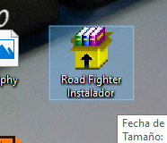
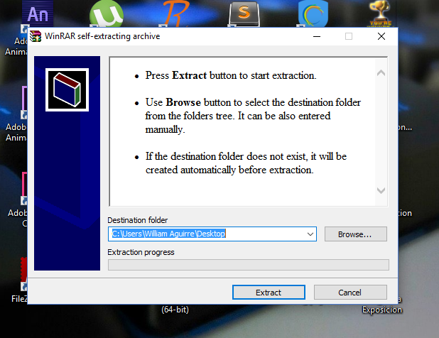
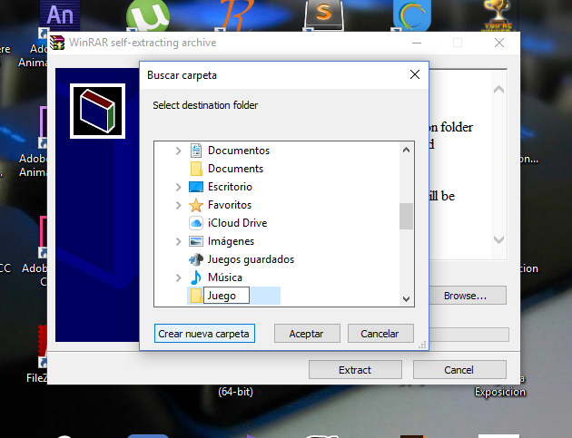
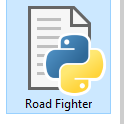
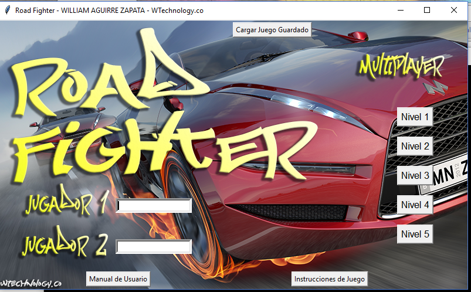
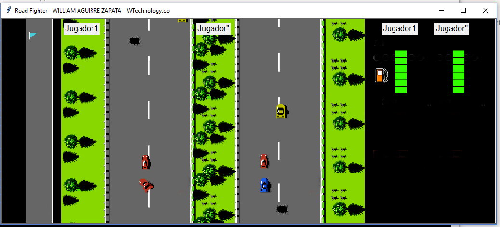
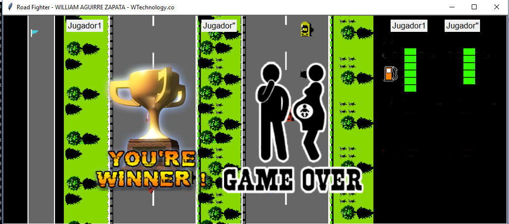

Manual de Usuarios
Road Fighter información
- creado: 03/04/2017
- Ultima Actualización: 31/05/2017
- Hecho por: William Aguirre Zapata
- http://roadfighter.wtechnology.co/
- manejador de versiones: https://github.com/monowilliam/Road-Fighter
1. Cómo instalar Python
¡Por fin estamos aquí! Pero primero, déjenos decirte qué es Python. Python es un lenguaje de programación muy popular que puede utilizarse para la creación de sitios web, juegos, software académico, gráficos y mucho, mucho más. Python se originó en la década de 1980 y su objetivo principal es ser legible por los seres humanos (¡no sólo para las máquinas!), por eso parece mucho más simple que otros lenguajes de programación. Esto hace que sea más fácil de aprender, pero no te preocupes, ¡Python es también muy poderoso!.
Instalar en Windows
Puedes descargar Python para Windows desde el sitio web https://www.python.org/downloads/release/python-343/ Después de descargar el archivo *.msi, debes ejecutarlo (haz doble click en el archivo) y sigue las instrucciones. Es importante recordar la ruta (el directorio) donde se ha instalado Python. ¡Será necesario más adelante! Algo para tener en cuenta: en la segunda pantalla del asistente de instalación, llamada "Customize", asegúrate de ir hacia abajo y elegir la opción "Add python.exe to the Path", como en:
Instalar para Linux
Es muy posible que ya tengas Python instalado. Para verificar que ya lo tienes instalado (y qué versión es), abre una consola y tipea el siguiente comando:$ python3 --version Python 3.4.2
Si no tienes Python instalado o si quieres una versión diferente, puedes instalarlo como sigue:
sudo apt-get install python3.4
Instalar para iOS x
Debes ir al sitio web https://www.python.org/downloads/release/python-342/ y descargar el instalador de Python:- descarga el archivo DMG Mac OS X 64-bit/32-bit installer,
- haz doble click para abrirlo,
- doble click en Python.mpkg para ejecutar al instalador.
Verifica que la instalación fue exitosa abriendo la Terminal y ejecutando el comando python3:
$ python3 --version Python 3.4.2
Si tienes alguna duda o si algo salió mal y no sabes cómo resolverlo - ¡pide ayuda a tu tutor! Algunas veces las cosas no salen tan fácilmente y es mejor pedir ayuda a alguien con más experiencia.
2. Cómo descargar Road Fighter
Descargar el instalador en: https://drive.google.com/file/d/0B_eHik8Oxy_2YXNLNmIzR242Q2M/view
Cómo instalar Road Fighter
Despues de descargado el archivo abrimos el ejecutable de nombre Road Fighter Instalador.exe
Damos clic en Browser
Creamos una carpeta con el nombre como quieran y guardamos la ubicacion, damos Aceptar y Extract
3. Cómo jugar a Road Fighter
Una vez instalado python en la computadoras, e instalado el juego de Road Fighter no vamos a la ubicación de la carpeta donde se extrayó el Programas.
Aquí abrimos el archivo llamado "Road Figther" :
Una vez cargado el juego nos abrirá una ventana con el menú principal, en el cual Escribimos los nombres de los dos jugadores contrincantes, y seleccionamos cualquier nivel que queremos jugar, el nivel 1 es el nivel fácil y el nivel 5 es el nivel más dificil.
El jugador que tenga consuma toda la gasolina antes del tiempo o se le acabe por chocar con los carros enemigos será el PERDEDORy así dandole la VICTORIA al contrincante
 